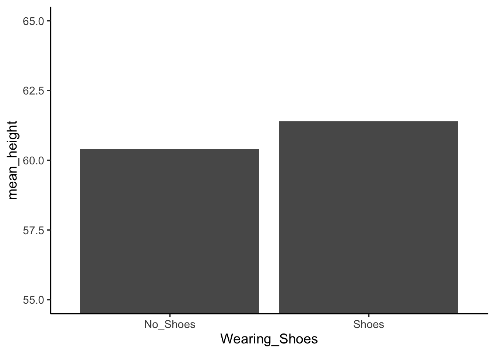
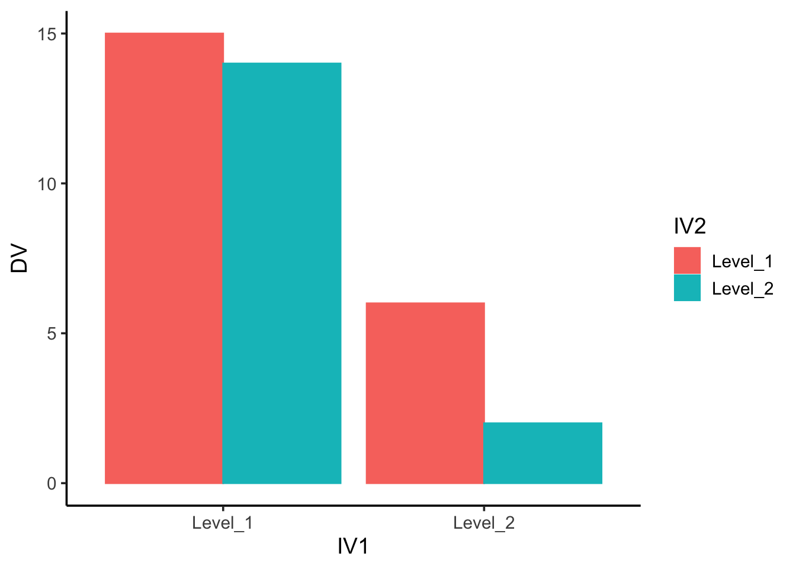

5 Factorial Designs
We have usually no knowledge that any one factor will exert its effects independently of all others that can be varied, or that its effects are particularly simply related to variations in these other factors. —Ronald Fisher
In Chapter 1 we briefly described a study conducted by Simone Schnall and her colleagues, in which they found that washing one’s hands leads people to view moral transgressions as less wrong (Schnall, Benton, and Harvey 2008). In a different but related study, Schnall and her colleagues investigated whether feeling physically disgusted causes people to make harsher moral judgments (Schnall et al. 2008). In this experiment, they manipulated participants’ feelings of disgust by testing them in either a clean room or a messy room that contained dirty dishes, an overflowing wastebasket, and a chewed-up pen. They also used a self-report questionnaire to measure the amount of attention that people pay to their own bodily sensations. They called this “private body consciousness.” They measured their primary dependent variable, the harshness of people’s moral judgments, by describing different behaviors (e.g., eating one’s dead dog, failing to return a found wallet) and having participants rate the moral acceptability of each one on a scale of 1 to 7. They also measured some other dependent variables, including participants’ willingness to eat at a new restaurant. Finally, the researchers asked participants to rate their current level of disgust and other emotions. The primary results of this study were that participants in the messy room were in fact more disgusted and made harsher moral judgments than participants in the clean room—but only if they scored relatively high in private body consciousness.
The research designs we have considered so far have been simple—focusing on a question about one variable or about a statistical relationship between two variables. But in many ways the complex design of this experiment undertaken by Schnall and her colleagues is more typical of research in psychology. Fortunately, we have already covered the basic elements of such designs in previous chapters. In this chapter, we look closely at how and why researchers combine these basic elements into more complex designs. We start with complex experiments—considering first the inclusion of multiple dependent variables and then the inclusion of multiple independent variables. Finally, we look at complex correlational designs.
Multiple Dependent Variables
Learning Objectives
- Explain why researchers often include multiple dependent variables in their studies.
- Explain what a manipulation check is and when it would be included in an experiment.
Imagine that you have made the effort to find a research topic, review the research literature, formulate a question, design an experiment, obtain research ethics board (REB) approval, recruit research participants, and manipulate an independent variable. It would seem almost wasteful to measure a single dependent variable. Even if you are primarily interested in the relationship between an independent variable and one primary dependent variable, there are usually several more questions that you can answer easily by including multiple dependent variables.
Measures of Different Constructs
Often a researcher wants to know how an independent variable affects several distinct dependent variables. For example, Schnall and her colleagues were interested in how feeling disgusted affects the harshness of people’s moral judgments, but they were also curious about how disgust affects other variables, such as people’s willingness to eat in a restaurant. As another example, researcher Susan Knasko was interested in how different odors affect people’s behavior (Knasko 1992). She conducted an experiment in which the independent variable was whether participants were tested in a room with no odor or in one scented with lemon, lavender, or dimethyl sulfide (which has a cabbage-like smell). Although she was primarily interested in how the odors affected people’s creativity, she was also curious about how they affected people’s moods and perceived health—and it was a simple enough matter to measure these dependent variables too. Although she found that creativity was unaffected by the ambient odor, she found that people’s moods were lower in the dimethyl sulfide condition, and that their perceived health was greater in the lemon condition.
When an experiment includes multiple dependent variables, there is again a possibility of carryover effects. For example, it is possible that measuring participants’ moods before measuring their perceived health could affect their perceived health or that measuring their perceived health before their moods could affect their moods. So the order in which multiple dependent variables are measured becomes an issue. One approach is to measure them in the same order for all participants—usually with the most important one first so that it cannot be affected by measuring the others. Another approach is to counterbalance, or systematically vary, the order in which the dependent variables are measured.
Manipulation Checks
When the independent variable is a construct that can only be manipulated indirectly—such as emotions and other internal states—an additional measure of that independent variable is often included as a manipulation check. This is done to confirm that the independent variable was, in fact, successfully manipulated. For example, Schnall and her colleagues had their participants rate their level of disgust to be sure that those in the messy room actually felt more disgusted than those in the clean room.
Manipulation checks are usually done at the end of the procedure to be sure that the effect of the manipulation lasted throughout the entire procedure and to avoid calling unnecessary attention to the manipulation. Manipulation checks become especially important when the manipulation of the independent variable turns out to have no effect on the dependent variable. Imagine, for example, that you exposed participants to happy or sad movie music—intending to put them in happy or sad moods—but you found that this had no effect on the number of happy or sad childhood events they recalled. This could be because being in a happy or sad mood has no effect on memories for childhood events. But it could also be that the music was ineffective at putting participants in happy or sad moods. A manipulation check—in this case, a measure of participants’ moods—would help resolve this uncertainty. If it showed that you had successfully manipulated participants’ moods, then it would appear that there is indeed no effect of mood on memory for childhood events. But if it showed that you did not successfully manipulate participants’ moods, then it would appear that you need a more effective manipulation to answer your research question.
Measures of the Same Construct
Another common approach to including multiple dependent variables is to operationally define and measure the same construct, or closely related ones, in different ways. Imagine, for example, that a researcher conducts an experiment on the effect of daily exercise on stress. The dependent variable, stress, is a construct that can be operationally defined in different ways. For this reason, the researcher might have participants complete the paper- and-pencil Perceived Stress Scale and measure their levels of the stress hormone cortisol. This is an example of the use of converging operations. If the researcher finds that the different measures are affected by exercise in the same way, then he or she can be confident in the conclusion that exercise affects the more general construct of stress.
When multiple dependent variables are different measures of the same construct—especially if they are measured on the same scale—researchers have the option of combining them into a single measure of that construct. Recall that Schnall and her colleagues were interested in the harshness of people’s moral judgments. To measure this construct, they presented their participants with seven different scenarios describing morally questionable behaviors and asked them to rate the moral acceptability of each one. Although they could have treated each of the seven ratings as a separate dependent variable, these researchers combined them into a single dependent variable by computing their mean.
When researchers combine dependent variables in this way, they are treating them collectively as a multiple- response measure of a single construct. The advantage of this is that multiple-response measures are generally more reliable than single-response measures. However, it is important to make sure the individual dependent variables are correlated with each other by computing an internal consistency measure such as Cronbach’s \(\alpha\). If they are not correlated with each other, then it does not make sense to combine them into a measure of a single construct. If they have poor internal consistency, then they should be treated as separate dependent variables.
Key Takeaways
Researchers in psychology often include multiple dependent variables in their studies. The primary reason is that this easily allows them to answer more research questions with minimal additional effort.
When an independent variable is a construct that is manipulated indirectly, it is a good idea to include a manipulation check. This is a measure of the independent variable typically given at the end of the procedure to confirm that it was successfully manipulated.
Multiple measures of the same construct can be analyzed separately or combined to produce a single multiple-item measure of that construct. The latter approach requires that the measures taken together have good internal consistency.
Exercises
Practice: List three independent variables for which it would be good to include a manipulation check. List three others for which a manipulation check would be unnecessary. Hint: Consider whether there is any ambiguity concerning whether the manipulation will have its intended effect.
Practice: Imagine a study in which the independent variable is whether the room where participants are tested is warm (30°) or cool (12°). List three dependent variables that you might treat as measures of separate variables. List three more that you might combine and treat as measures of the same underlying construct.
Multiple Independent Variables
Learning Objectives
- Explain why researchers often include multiple independent variables in their studies.
- Define factorial design, and use a factorial design table to represent and interpret simple factorial designs.
- Distinguish between main effects and interactions, and recognize and give examples of each.
- Sketch and interpret bar graphs and line graphs showing the results of studies with simple factorial designs.
Just as it is common for studies in psychology to include multiple dependent variables, it is also common for them to include multiple independent variables. Schnall and her colleagues studied the effect of both disgust and private body consciousness in the same study. Researchers’ inclusion of multiple independent variables in one experiment is further illustrated by the following actual titles from various professional journals:
The Effects of Temporal Delay and Orientation on Haptic Object Recognition
Opening Closed Minds: The Combined Effects of Intergroup Contact and Need for Closure on Prejudice
Effects of Expectancies and Coping on Pain-Induced Intentions to Smoke
The Effect of Age and Divided Attention on Spontaneous Recognition
The Effects of Reduced Food Size and Package Size on the Consumption Behavior of Restrained and Unrestrained Eaters
Just as including multiple dependent variables in the same experiment allows one to answer more research questions, so too does including multiple independent variables in the same experiment. For example, instead of conducting one study on the effect of disgust on moral judgment and another on the effect of private body consciousness on moral judgment, Schnall and colleagues were able to conduct one study that addressed both questions. But including multiple independent variables also allows the researcher to answer questions about whether the effect of one independent variable depends on the level of another. This is referred to as an interaction between the independent variables. Schnall and her colleagues, for example, observed an interaction between disgust and private body consciousness because the effect of disgust depended on whether participants were high or low in private body consciousness. As we will see, interactions are often among the most interesting results in psychological research.
Factorial Designs
By far the most common approach to including multiple independent variables in an experiment is the factorial design. In a factorial design, each level of one independent variable (which can also be called a factor) is combined with each level of the others to produce all possible combinations. Each combination, then, becomes a condition in the experiment. Imagine, for example, an experiment on the effect of cell phone use (yes vs. no) and time of day (day vs. night) on driving ability. This is shown in the factorial design table in Figure Figure 1. The columns of the table represent cell phone use, and the rows represent time of day. The four cells of the table represent the four possible combinations or conditions: using a cell phone during the day, not using a cell phone during the day, using a cell phone at night, and not using a cell phone at night. This particular design is referred to as a 2 x 2 (read “two-by- two”) factorial design because it combines two variables, each of which has two levels. If one of the independent variables had a third level (e.g., using a hand-held cell phone, using a hands-free cell phone, and not using a cell phone), then it would be a 3 x 2 factorial design, and there would be six distinct conditions. Notice that the number of possible conditions is the product of the numbers of levels. A 2 x 2 factorial design has four conditions, a 3 x 2 factorial design has six conditions, a 4 x 5 factorial design would have 20 conditions, and so on.
In principle, factorial designs can include any number of independent variables with any number of levels. For example, an experiment could include the type of psychotherapy (cognitive vs. behavioral), the length of the psychotherapy (2 weeks vs. 2 months), and the sex of the psychotherapist (female vs. male). This would be a 2 x 2 x 2 factorial design and would have eight conditions. Figure Figure 2 shows one way to represent this design. In practice, it is unusual for there to be more than three independent variables with more than two or three levels each.
This is for at least two reasons: For one, the number of conditions can quickly become unmanageable. For example, adding a fourth independent variable with three levels (e.g., therapist experience: low vs. medium vs. high) to the current example would make it a 2 x 2 x 2 x 3 factorial design with 24 distinct conditions. Second, the number of participants required to populate all of these conditions (while maintaining a reasonable ability to detect a real underlying effect) can render the design unfeasible (for more information, see the discussion about the importance of adequate statistical power in Chapter 13). As a result, in the remainder of this section we will focus on designs with two independent variables. The general principles discussed here extend in a straightforward way to more complex factorial designs.
Assigning Participants to Conditions
Recall that in a simple between-subjects design, each participant is tested in only one condition. In a simple within- subjects design, each participant is tested in all conditions. In a factorial experiment, the decision to take the between-subjects or within-subjects approach must be made separately for each independent variable. In a between- subjects factorial design, all of the independent variables are manipulated between subjects. For example, all participants could be tested either while using a cell phone or while not using a cell phone and either during the day or during the night. This would mean that each participant was tested in one and only one condition. In a within- subjects factorial design, all of the independent variables are manipulated within subjects. All participants could be tested both while using a cell phone and while not using a cell phone and both during the day and during the night. This would mean that each participant was tested in all conditions. The advantages and disadvantages of these two approaches are the same as those discussed in Chapter 6. The between-subjects design is conceptually simpler, avoids carryover effects, and minimizes the time and effort of each participant. The within-subjects design is more efficient for the researcher and controls extraneous participant variables.
It is also possible to manipulate one independent variable between subjects and another within subjects. This is called a mixed factorial design. For example, a researcher might choose to treat cell phone use as a within- subjects factor by testing the same participants both while using a cell phone and while not using a cell phone (while counterbalancing the order of these two conditions). But he or she might choose to treat time of day as a between-subjects factor by testing each participant either during the day or during the night (perhaps because this only requires them to come in for testing once). Thus each participant in this mixed design would be tested in two of the four conditions.
Regardless of whether the design is between subjects, within subjects, or mixed, the actual assignment of participants to conditions or orders of conditions is typically done randomly.
Non-manipulated Independent Variables
In many factorial designs, one of the independent variables is a non-manipulated independent variable. The researcher measures it but does not manipulate it. The study by Schnall and colleagues is a good example. One independent variable was disgust, which the researchers manipulated by testing participants in a clean room or a messy room. The other was private body consciousness, a participant variable which the researchers simply measured. Another example is a study by Halle Brown and colleagues in which participants were exposed to several words that they were later asked to recall (Brown et al. 1999). The manipulated independent variable was the type of word. Some were negative health-related words (e.g., tumor, coronary), and others were not health related (e.g., election, geometry). The non-manipulated independent variable was whether participants were high or low in hypochondriasis (excessive concern with ordinary bodily symptoms). The result of this study was that the participants high in hypochondriasis were better than those low in hypochondriasis at recalling the health-related words, but they were no better at recalling the non-health-related words.
Such studies are extremely common, and there are several points worth making about them. First, non- manipulated independent variables are usually participant variables (private body consciousness, hypochondriasis, self-esteem, and so on), and as such they are by definition between-subjects factors. For example, people are either low in hypochondriasis or high in hypochondriasis; they cannot be tested in both of these conditions. Second, such studies are generally considered to be experiments as long as at least one independent variable is manipulated, regardless of how many non-manipulated independent variables are included. Third, it is important to remember that causal conclusions can only be drawn about the manipulated independent variable. For example, Schnall and her colleagues were justified in concluding that disgust affected the harshness of their participants’ moral judgments because they manipulated that variable and randomly assigned participants to the clean or messy room. But they would not have been justified in concluding that participants’ private body consciousness affected the harshness of their participants’ moral judgments because they did not manipulate that variable. It could be, for example, that having a strict moral code and a heightened awareness of one’s body are both caused by some third variable (e.g., neuroticism). Thus it is important to be aware of which variables in a study are manipulated and which are not.
Graphing the Results of Factorial Experiments
The results of factorial experiments with two independent variables can be graphed by representing one independent variable on the x-axis and representing the other by using different kinds of bars or lines. (The y-axis is always reserved for the dependent variable.)

Figure Figure 3 shows results for two hypothetical factorial experiments. The top panel shows the results of a 2 x 2 design. Time of day (day vs. night) is represented by different locations on the x-axis, and cell phone use (no vs. yes) is represented by different-colored bars. (It would also be possible to represent cell phone use on the x-axis and time of day as different-colored bars. The choice comes down to which way seems to communicate the results most clearly.) The bottom panel of Figure Figure 3 shows the results of a 4 x 2 design in which one of the variables is quantitative. This variable, psychotherapy length, is represented along the x-axis, and the other variable (psychotherapy type) is represented by differently formatted lines. This is a line graph rather than a bar graph because the variable on the x-axis is quantitative with a small number of distinct levels. Line graphs are also appropriate when representing measurements made over a time interval (also referred to as time series information) on the x-axis.
Main Effects and Interactions
In factorial designs, there are two kinds of results that are of interest: main effects and interaction effects (which are also just called “interactions”). A main effect is the statistical relationship between one independent variable and a dependent variable—averaging across the levels of the other independent variable. Thus there is one main effect to consider for each independent variable in the study. The top panel of Figure Figure 3 shows a main effect of cell phone use because driving performance was better, on average, when participants were not using cell phones than when they were. The blue bars are, on average, higher than the red bars. It also shows a main effect of time of day because driving performance was better during the day than during the night—both when participants were using cell phones and when they were not. Main effects are independent of each other in the sense that whether or not there is a main effect of one independent variable says nothing about whether or not there is a main effect of the other. The bottom panel, for example, shows a clear main effect of psychotherapy length. The longer the psychotherapy, the better it worked.
There is an interaction effect (or just “interaction”) when the effect of one independent variable depends on the level of another. Although this might seem complicated, you already have an intuitive understanding of interactions. It probably would not surprise you, for example, to hear that the effect of receiving psychotherapy is stronger among people who are highly motivated to change than among people who are not motivated to change. This is an interaction because the effect of one independent variable (whether or not one receives psychotherapy) depends on the level of another (motivation to change). Schnall and her colleagues also demonstrated an interaction because the effect of whether the room was clean or messy on participants’ moral judgments depended on whether the participants were low or high in private body consciousness. If they were high in private body consciousness, then those in the messy room made harsher judgments. If they were low in private body consciousness, then whether the room was clean or messy did not matter.
The effect of one independent variable can depend on the level of the other in several different ways. This is shown in Figure Figure 4.
In the top panel, independent variable “B” has an effect at level 1 of independent variable “A” but no effect at level 2 of independent variable “A.” (This is much like the study of Schnall and her colleagues where there was an effect of disgust for those high in private body consciousness but not for those low in private body consciousness.) In the middle panel, independent variable “B” has a stronger effect at level 1 of independent variable “A” than at level 2. This is like the hypothetical driving example where there was a stronger effect of using a cell phone at night than during the day. In the bottom panel, independent variable “B” again has an effect at both levels of independent variable “A,” but the effects are in opposite directions. Figure Figure 4 shows the strongest form of this kind of interaction, called a crossover interaction. One example of a crossover interaction comes from a study by Kathy Gilliland on the effect of caffeine on the verbal test scores of introverts and extraverts (Gilliland 1980). Introverts perform better than extraverts when they have not ingested any caffeine. But extraverts perform better than introverts when they have ingested 4 mg of caffeine per kilogram of body weight. Figure Figure 5 shows examples of these same kinds of interactions when one of the independent variables is quantitative and the results are plotted in a line graph.
Note that in a crossover interaction, the two lines literally “cross over” each other. In many studies, the primary research question is about an interaction. The study by Brown and her colleagues was inspired by the idea that people with hypochondriasis are especially attentive to any negative health-related information. This led to the hypothesis that people high in hypochondriasis would recall negative health-related words more accurately than people low in hypochondriasis but recall non-health-related words about the same as people low in hypochondriasis. And of course this is exactly what happened in this study.
Key Takeaways
Researchers often include multiple independent variables in their experiments. The most common approach is the factorial design, in which each level of one independent variable is combined with each level of the others to create all possible conditions.
In a factorial design, the main effect of an independent variable is its overall effect averaged across all other independent variables. There is one main effect for each independent variable.
There is an interaction between two independent variables when the effect of one depends on the level of the other. Some of the most interesting research questions and results in psychology are specifically about interactions.
Exercises
Practice: Return to the five article titles presented at the beginning of this section. For each one, identify the independent variables and the dependent variable.
Practice: Create a factorial design table for an experiment on the effects of room temperature and noise level on performance on the MCAT. Be sure to indicate whether each independent variable will be manipulated between-subjects or within-subjects and explain why.
Practice: Sketch 8 different bar graphs to depict each of the following possible results in a 2 x 2 factorial experiment:
No main effect of A; no main effect of B; no interaction
Main effect of A; no main effect of B; no interaction
No main effect of A; main effect of B; no interaction
Main effect of A; main effect of B; no interaction
Main effect of A; main effect of B; interaction
Main effect of A; no main effect of B; interaction
No main effect of A; main effect of B; interaction
No main effect of A; no main effect of B; interaction
Factorial designs: Round 2
Designs with more than one independent variable refer to designs where the experimenter manipulates at least two independent variables. Consider the light-switch example from the previous chapter. Imagine you are trying to figure out which of two light switches turns on a light. The dependent variable is the light (we measure whether it is on or off). The first independent variable is light switch #1, and it has two levels, up or down. The second independent variable is light switch #2, and it also has two levels, up or down. When there are two independent variables, each with two levels, there are four total conditions that can be tested. We can describe these four conditions in a 2x2 table.
| Switch 1 Up | Switch 1 Down | |
|---|---|---|
| Switch 2 Up | Light ? | Light ? |
| Switch 2 Down | Light ? | Light ? |
This kind of design has a special property that makes it a factorial design. That is, the levels of each independent variable are each manipulated across the levels of the other indpendent variable. In other words, we manipulate whether switch #1 is up or down when switch #2 is up, and when switch numebr #2 is down. Another term for this property of factorial designs is “fully-crossed”.
It is possible to conduct experiments with more than independent variable that are not fully-crossed, or factorial designs. This would mean that each of the levels of one independent variable are not necessarilly manipulated for each of the levels of the other independent variables. These kinds of designs are sometimes called unbalanced designs, and they are not as common as fully-factorial designs. An example, of an unbalanced design would be the following design with only 3 conditions:
| Switch 1 Up | Switch 1 Down | |
|---|---|---|
| Switch 2 Up | Light ? | Light ? |
| Switch 2 Down | Light ? | NOT MEASURED |
Factorial designs are often described using notation such as AXB, where A= the number of levels for the first independent variable, and B = the number of levels for the second independent variable. The fully-crossed version of the 2-light switch experiment would be called a 2x2 factorial design. This notation is convenient because by multiplying the numbers in the equation we can find the number of conditions in the design. For example 2x2 = 4 conditions.
More complicated factorial designs have more indepdent variables and more levels. We use the same notation describe these designs. The number for each variable represents the number of levels for that variable, and the number of numbers in the equation represents the number of variables. So, a 2x2x2 design has three independent variables, and each one has 2 levels, for a total of 2x2x2=6 conditions. A 3x3 design has two independent variables, each with three levels, for a total of 9 conditions. Designs can get very complicated, such as a 5x3x6x2x7 experiment, with five independent variables, each with differing numbers of levels, for a total of 1260 conditions. If you are considering a complicated design like that one, you should consider how to simplify it.
2x2 Factorial designs
For simplicity, we will focus mainly on 2x2 factorial designs. As with simple designs with only one independent variable, factorial designs have the same basic empirical question. Did the manipulation cause a change in the measurement? However, 2x2 designs have more than one manipulation, so there is more than one way that a change in measurement can be observed. So, we end up asking the basic empirical question more than once.
More specifically, the analysis of factorial designs are split into two parts: main effects and interactions. Main effects are occur when the levels of one independent variable cause a change in the dependent variable. In a 2x2 design, there are two independent variables, so there are two possible main effects: the main effect of independent variable 1, and the main effect of independent variable 2. An interaction occurs when the effect of one independent variable depends on the levels of the other independent variable. My experience in teaching the concept of main effects and interactions is that they are confusing. So, I expect that these definitions will not be very helpful, and although they are clear and precise, they only become helpful as definitions after you understand the concepts…so they are not useful for explaining the concepts. To explain the concepts we will go through several different kinds of examples.
To briefly add to the confusion, or perhaps to illustrate why these two concepts can be confusing, we will look at the eight possible outcomes that could occur in a 2x2 factorial experiment.
| Possible outcome | IV1 main effect | IV2 main effect | Interaction |
|---|---|---|---|
| 1 | yes | yes | yes |
| 2 | yes | no | yes |
| 3 | no | yes | yes |
| 4 | no | no | yes |
| 5 | yes | yes | no |
| 6 | yes | no | no |
| 7 | no | yes | no |
| 8 | no | no | no |
In the table, a yes means that there was statistically significant difference for one of the main effects or interaction, and a no means that there was not a statistically significant difference. As you can see, just by adding one more independent variable, the number of possible outcomes quickly become more complicated. When you conduct a 2x2 design, the task for analysis is to determine which of the 8 possibilities occurred, and then explain the patterns for each of the effects that occurred. That’s a lot of explaining to do.
Main effects
Main effects occur when the levels of an independent variable cause change in the measurement or dependent variable. There is one possible main effect for each independent variable in the design. When we find that independent variable did cause change, then we say there was a main effect. When we find that the independent variable did not cause change, then we say there was no main effect.
The simplest way to understand a main effect is to pretend that the other independent variables do not exist. If you do this, then you simply have a single-factor design, and you are asking whether that single factor caused change in the measurement. For a 2x2 experiment, you do this twice, once for each independent variable.
Let’s consider a silly example to illustrate an important property of main effects. In this experiment the dependent variable will be height in inches. The independent variables will be shoes and hats. The shoes independent variable will have two levels: wearing shoes vs. no shoes. The hats independent variable will have two levels: wearing a hat vs. not wearing a hat. The experiment will provide the shoes and hats. The shoes add 1 inch to a person’s height, and the hats add 6 inches to a person’s height. Further imagine that we conduct a within-subjects design, so we measure each person’s height in each of the fours conditions. Before we look at some example data, the findings from this experiment should be pretty obvious. People will be 1 inch taller when they wear shoes, and 6 inches taller when they where a hat. We see this in the example data from 10 subjects presented below:
| NoShoes_NoHat | Shoes_NoHat | NoShoes_Hat | Shoes_Hat |
|---|---|---|---|
| 59 | 60 | 65 | 66 |
| 57 | 58 | 63 | 64 |
| 57 | 58 | 63 | 64 |
| 58 | 59 | 64 | 65 |
| 58 | 59 | 64 | 65 |
| 58 | 59 | 64 | 65 |
| 57 | 58 | 63 | 64 |
| 56 | 57 | 62 | 63 |
| 58 | 59 | 64 | 65 |
| 56 | 57 | 62 | 63 |
The mean heights in each condition are:
| x | |
|---|---|
| NoShoes_NoHat | 57.4 |
| Shoes_NoHat | 58.4 |
| NoShoes_Hat | 63.4 |
| Shoes_Hat | 64.4 |
To find the main effect of the shoes manipulation we want to find the mean height in the no shoes condition, and compare it to the mean height of the shoes condition. To do this, we , or average over the observations in the hat conditions. For example, looking only at the no shoes vs. shoes conditions we see the following averages for each subject.
| NoShoes | Shoes |
|---|---|
| 62 | 63 |
| 60 | 61 |
| 60 | 61 |
| 61 | 62 |
| 61 | 62 |
| 61 | 62 |
| 60 | 61 |
| 59 | 60 |
| 61 | 62 |
| 59 | 60 |
The group means are:
| x | |
|---|---|
| NoShoes | 60.4 |
| Shoes | 61.4 |
As expected, we see that the average height is 1 inch taller when subjects wear shoes vs. do not wear shoes. So, the main effect of wearing shoes is to add 1 inch to a person’s height.
We can do the very same thing to find the main effect of hats. Except in this case, we find the average heights in the no hat vs. hat conditions by averaging over the shoe variable.
| NoHat | Hat |
|---|---|
| 59.5 | 65.5 |
| 57.5 | 63.5 |
| 57.5 | 63.5 |
| 58.5 | 64.5 |
| 58.5 | 64.5 |
| 58.5 | 64.5 |
| 57.5 | 63.5 |
| 56.5 | 62.5 |
| 58.5 | 64.5 |
| 56.5 | 62.5 |
The group means are:
| x | |
|---|---|
| NoHat | 57.9 |
| Hat | 63.9 |
As expected, we the average height is 6 inches taller when the subjects wear a hat vs. do not wear a hat. So, the main effect of wearing hats is to add 1 inch to a person’s height.
Instead of using tables to show the data, let’s use some bar graphs. First, we will plot the average heights in all four conditions.
Some questions to ask yourself are 1) can you identify the main effect of wearing shoes in the figure, and 2) can you identify the main effet of wearing hats in the figure. Both of these main effects can be seen in the figure, but they aren’t fully clear. You have to do some visual averaging.
Perhaps the most clear is the main effect of wearing a hat. The red bars show the conditions where people wear hats, and the green bars show the conditions where people do not wear hats. For both levels of the wearing shoes variable, the red bars are higher than the green bars. That is easy enough to see. More specifically, in both cases, wearing a hat adds exactly 6 inches to the height, no more no less.
Less clear is the main effect of wearing shoes. This is less clear because the effect is smaller so it is harder to see. How to find it? You can look at the red bars first and see that the red bar for no_shoes is slightly smaller than the red bar for shoes. The same is true for the green bars. The green bar for no_shoes is slightly smaller than the green bar for shoes.

Data from 2x2 designs is often present in graphs like the one above. An advantage of these graphs is that they display means in all four conditions of the design. However, they do not clearly show the two main effects. Someone looking at this graph alone would have to guesstimate the main effects. Or, in addition to the main effects, a researcher could present two more graphs, one for each main effect (however, in practice this is not commonly done because it takes up space in a journal article, and with practice it becomes second nature to “see” the presence or absence of main effects in graphs showing all of the conditions). If we made a separate graph for the main effect of shoes we should see a difference of 1 inch between conditions. Similarly, if we made a separate graph for the main effect of hats then we should see a difference of 6 between conditions. Examples of both of those graphs appear in the margin.
Why have we been talking about shoes and hats? These independent variables are good examples of variables that are truly independent from one another. Neither one influences the other. For example, shoes with a 1 inch sole will always add 1 inch to a person’s height. This will be true no matter whether they wear a hat or not, and no matter how tall the hat is. In other words, the effect of wearing a shoe does not depend on wearing a hat. More formally, this means that the shoe and hat independent variables do not interact. It would be very strange if they did interact. It would mean that the effect of wearing a shoe on height would depend on wearing a hat. This does not happen in our universe. But in some other imaginary universe, it could mean, for example, that wearing a shoe adds 1 to your height when you do not wear a hat, but adds more than 1 inch (or less than 1 inch) when you do wear a hat. This thought experiment will be our entry point into discussing interactions. A take-home message before we begin is that some independent variables (like shoes and hats) do not interact; however, there are many other independent variables that do.
Interactions
Interactions occur when the effect of an independent variable depends on the levels of the other independent variable. As we discussed above, some independent variables are independent from one another and will not produce interactions. However, other combinations of independent variables are not independent from one another and they produce interactions. Remember, independent variables are always manipulated independently from the measured variable (see margin note), but they are not necessarilly independent from each other.
These ideas can be confusing if you think that the word “independent” refers to the relationship between independent variables. However, the term “independent variable” refers to the relationship between the manipulated variable and the measured variable. Remember, “independent variables” are manipulated independently from the measured variable. Specifically, the levels of any independent variable do not change because we take measurements. Instead, the experimenter changes the levels of the independent variable and then observes possible changes in the measures.
There are many simple examples of two independent variables being dependent on one another to produce an outcome. Consider driving a car. The dependent variable (outcome that is measured) could be how far the car can drive in 1 minute. Independent variable 1 could be gas (has gas vs. no gas). Independent variable 2 could be keys (has keys vs. no keys). This is a 2x2 design, with four conditions.
| Gas | No Gas | |
|---|---|---|
| Keys | can drive | x |
| No Keys | x | x |
Importantly, the effect of the gas variable on driving depends on the levels of having a key. Or, to state it in reverse, the effect of the key variable on driving depends on the levesl of the gas variable. Finally, in plain english. You need the keys and gas to drive. Otherwise, there is no driving.
What makes a people hangry?
To continue with more examples, let’s consider an imaginary experiment examining what makes people hangry. You may have been hangry before. It’s when you become highly irritated and angry because you are very hungry…hangry. I will propose an experiment to measure conditions that are required to produce hangriness. The pretend experiment will measure hangriness (we ask people how hangry they are on a scale from 1-10, with 10 being most hangry, and 0 being not hangry at all). The first independent variable will be time since last meal (1 hour vs. 5 hours), and the second independent variable will be how tired someone is (not tired vs very tired). I imagine the data could look something the following bar graph.
The graph shows clear evidence of two main effects, . There is a main effect of time since last meal. Both the bars in the 1 hour conditions have smaller hanger ratings than both of the bars in the 5 hour conditions. There is a main effect of being tired. Both of the bars in the “not tired” conditions are smaller than than both of the bars in the “tired” conditions. What about the interaction?
Remember, an interaction occurs when the effect of one independent variable depends on the level of the other independent variable. We can look at this two ways, and either way shows the presence of the very same interaction. First, does the effect of being tired depend on the levels of the time since last meal? Yes. Look first at the effect of being tired only for the “1 hour condition”. We see the red bar (tired) is 1 unit lower than the green bar (not_tired). So, there is an effect of 1 unit of being tired in the 1 hour condition. Next, look at the effect of being tired only for the “5 hour” condition. We see the red bar (tired) is 3 units lower than the green bar (not_tired). So, there is an effect of 3 units for being tired in the 5 hour condition. Clearly, the size of the effect for being tired depends on the levels of the time since last meal variable. We call this an interaction.
The second way of looking at the interaction is to start by looking at the other variable. For example, does the effect of time since last meal depend on the levels of the tired variable? The answer again is yes. Look first at the effect of time since last meal only for the red bars in the “not tired” condition. The red bar in the 1 hour condition is 1 unit smaller than the red bar in the 5 hour condition. Next, look at the effect of time since last meal only for the green bars in the “tired” condition. The green bar in the 1 hour condition is 3 units smaller than the green bar in the 5 hour condition. Again, the size of the effect of time since last meal depends on the levels of the tired variable.No matter which way you look at the interaction, we get the same numbers for the size of the interaction effect, which is 2 units (a difference between 3 and 1 = 2). The interaction suggests that something special happens when people are tired and haven’t eaten in 5 hours. In this condition, they can become very hangry. Whereas, in the other conditions, there are only small increases in being hangry.
Identifying main effects and interactions
Research findings are often presented to readers using graphs or tables. For example, the very same pattern of data can be displayed in a bar graph, line graph, or table of means. These different formats can make the data look different, even though the pattern in the data is the same. An important skill to develop is the ability to identify the patterns in the data, regardless of the format they are presented in. Some examples of bar and line graphs are presented in the margin, and two example tables are presented below. Each format displays the same pattern of data.
| DV | IV1 | IV2 |
|---|---|---|
| 10 | Level_1 | Level_1 |
| 12 | Level_2 | Level_1 |
| 17 | Level_1 | Level_2 |
| 13 | Level_2 | Level_2 |
#> df$IV2
#> df$IV1 Level_1 Level_2
#> Level_1 10 17
#> Level_2 12 13After you become comfortable with interpreting data in these different formats, you should be able to quickly identify the pattern of main effects and interactions. For example, you would be able to notice that all of these graphs and tables show evidence for two main effects and one interaction.
As an exercise toward this goal, we will first take a closer look at extracting main effects and interactions from tables. This exercise will how the condition means are used to calculate the main effects and interactions. Consider the table of condition means below.
| IV1 | |||
|---|---|---|---|
| A | B | ||
| IV2 | 1 | 4 | 5 |
| 2 | 3 | 8 |
Main effects
Main effects are the differences between the means of single independent variable. Notice, this table only shows the condition means for each level of all independent variables. So, the means for each IV must be calculated. The main effect for IV1 is the comparison between level A and level B, which involves calculating the two column means. The mean for IV1 Level A is (4+3)/2 = 3.5. The mean for IV1 Level B is (5+8)/2 = 6.5. So the main effect is 3 (6.5 - 3.5). The main effect for IV2 is the comparison between level 1 and level 2, which involves calculating the two row means. The mean for IV2 Level 1 is (4+5)/2 = 4.5. The mean for IV2 Level 2 is (3+8)/2 = 5.5. So the main effect is 1 (5.5 - 4.5). The process of computing the average for each level of a single independent variable, always involves collapsing, or averaging over, all of the other conditions from other variables that also occured in that condition
Interactions
Interactions ask whether the effect of one independent variable depends on the levels of the other independent variables. This question is answered by computing difference scores between the condition means. For example, we look the effect of IV1 (A vs. B) for both levels of of IV2. Focus first on the condition means in the first row for IV2 level 1. We see that A=4 and B=5, so the effect IV1 here was 5-4 = 1. Next, look at the condition in the second row for IV2 level 2. We see that A=3 and B=8, so the effect of IV1 here was 8-3 = 5. We have just calculated two differences (5-4=1, and 8-3=5). These difference scores show that the size of the IV1 effect was different across the levels of IV2. To calculate the interaction effect we simply find the difference between the difference scores, 5-1=4. In general, if the difference between the difference scores is different, then there is an interaction effect.
Example bar graphs
The IV1 graph shows a main effect only for IV1 (both red and green bars are lower for level 1 than level 2). The IV1&IV2 graphs shows main effects for both variables. The two bars on the left are both lower than the two on the right, and the red bars are both lower than the green bars. The IV1xIV2 graph shows an example of a classic cross-over interaction. Here, there are no main effects, just an interaction. There is a difference of 2 between the green and red bar for Level 1 of IV1, and a difference of -2 for Level 2 of IV1. That makes the differences between the differences = 4. Why are their no main effects? Well the average of the red bars would equal the average of the green bars, so there is no main effect for IV2. And, the average of the red and green bars for level 1 of IV1 would equal the average of the red and green bars for level 2 of IV1, so there is no main effect. The bar graph for IV2 shows only a main effect for IV2, as the red bars are both lower than the green bars.
Example line graphs
You may find that the patterns of main effects and interaction looks different depending on the visual format of the graph. The exact same patterns of data plotted up in bar graph format, are plotted as line graphs for your viewing pleasure. Note that for the IV1 graph, the red line does not appear because it is hidden behind the green line (the points for both numbers are identical).
Interpreting main effects and interactions
The presence of an interaction can sometimes change how we interpet main effects. For example, a really strong interaction can produce the appearance of a main effect, even though when we look at the data most people would agree the main effect is not there.
In the above graph there is clearly an interaction. IV2 has no effect under level 1 of IV1 (e.g., the red and green bars are the same). IV2 has a large effect under level 2 of IV2 (the red bar is 2 and the green bar is 9). So, the interaction effect is a total of 7. Are there any main effects? This is a debatable question. Consider the main effect for IV1. The mean for level 1 is (2+2)/2 = 2, and the mean for level 2 is (2+9)/2 = 5.5. There is a difference between the means of 3.5, which is consistent with a main effect. Consider, the main effect for IV2. The mean for level 1 is again (2+2)/2 = 2, and the mean for level 2 is again (2+9)/2 = 5.5. Again, there is a difference between the means of 3.5, which is consistent with a main effect. What is going on here is that the process of averagin over conditions that we use to compute main effects is causing a main effect to appear, even though we don’t really see clear evidence of main effects.
Clear evidence of a main effect typically refers to cases where there is a consistent additive influence. For example, if there really was a main effect of IV1, then both red and green bars for level 2 should be higher, not just one of them. In other words, the effect of IV1 did not uniformly raise or lower the means across all of the other conditions. For this reason, the main effects that we observed by performing the calculation are really just an interaction in disguise.
The next example shows a case where it would be more appropriate to conclude that the main effects and the interaction were both real.

Can you spot the interaction right away? The difference between red and green bars is small for level 1 of IV1, but large for level 2. The differences between the differences are different, so there is an interaction. But, we also see clear evidence of two main effects. For example, both the red and green bars for IV1 level 1 are higher than IV1 Level 2. And, both of the red bars (IV2 level 1) are higher than the green bars (IV2 level 2).
Complex Correlational Designs
Learning Objectives
- Explain some reasons that researchers use complex correlational designs.
- Create and interpret a correlation matrix.
- Describe how researchers can use correlational research to explore causal relationships among variables—including the limits of this approach.
As we have already seen, researchers conduct correlational studies rather than experiments when they are interested in noncausal relationships or when they are interested in causal relationships where the independent variable cannot be manipulated for practical or ethical reasons. In this section, we look at some approaches to complex correlational research that involve measuring several variables and assessing the relationships among them.
Correlational Studies With Factorial Designs
We have already seen that factorial experiments can include manipulated independent variables or a combination of manipulated and non-manipulated independent variables. But factorial designs can also include only non- manipulated independent variables, in which case they are no longer experiments but correlational studies. Consider a hypothetical study in which a researcher measures both the moods and the self-esteem of several participants—categorizing them as having either a positive or negative mood and as being either high or low in self-esteem—along with their willingness to have unprotected sexual intercourse. This can be conceptualized as a 2 x 2 factorial design with mood (positive vs. negative) and self-esteem (high vs. low) as between-subjects factors. Willingness to have unprotected sex is the dependent variable. This design can be represented in a factorial design table and the results in a bar graph of the sort we have already seen. The researcher would consider the main effect of sex, the main effect of self-esteem, and the interaction between these two independent variables.
Again, because neither independent variable in this example was manipulated, it is a correlational study rather than an experiment. (The similar study by MacDonald and Martineau (2002) was an experiment because they manipulated their participants’ moods.) This is important because, as always, one must be cautious about inferring causality from correlational studies because of the directionality and third-variable problems. For example, a main effect of participants’ moods on their willingness to have unprotected sex might be caused by any other variable that happens to be correlated with their moods.
Assessing Relationships Among Multiple Variables
Most complex correlational research, however, does not fit neatly into a factorial design. Instead, it involves measuring several variables—often both categorical and quantitative—and then assessing the statistical relationships among them. For example, researchers Nathan Radcliffe and William Klein studied a sample of middle-aged adults to see how their level of optimism (measured by using a short questionnaire called the Life Orientation Test) relates to several other variables related to having a heart attack (Radcliffe and Klein 2002). These included their health, their knowledge of heart attack risk factors, and their beliefs about their own risk of having a heart attack. They found that more optimistic participants were healthier (e.g., they exercised more and had lower blood pressure), knew about heart attack risk factors, and correctly believed their own risk to be lower than that of their peers.
This approach is often used to assess the validity of new psychological measures. For example, when John Cacioppo and Richard Petty created their Need for Cognition Scale—a measure of the extent to which people like to think and value thinking—they used it to measure the need for cognition for a large sample of college students, along with three other variables: intelligence, socially desirable responding (the tendency to give what one thinks is the “appropriate” response), and dogmatism (Cacioppo and Petty 1982). The results of this study are summarized in Figure Figure 6, which is a correlation matrix showing the correlation (Pearson’s r) between every possible pair of variables in the study.

For example, the correlation between the need for cognition and intelligence was +.39, the correlation between intelligence and socially desirable responding was +.02, and so on. (Only half the matrix is filled in because the other half would contain exactly the same information. Also, because the correlation between a variable and itself is always +1.00, these values are replaced with dashes throughout the matrix.) In this case, the overall pattern of correlations was consistent with the researchers’ ideas about how scores on the need for cognition should be related to these other constructs.
When researchers study relationships among a large number of conceptually similar variables, they often use a complex statistical technique called factor analysis. In essence, factor analysis organizes the variables into a smaller number of clusters, such that they are strongly correlated within each cluster but weakly correlated between clusters. Each cluster is then interpreted as multiple measures of the same underlying construct. These underlying constructs are also called “factors.” For example, when people perform a wide variety of mental tasks, factor analysis typically organizes them into two main factors—one that researchers interpret as mathematical intelligence (arithmetic, quantitative estimation, spatial reasoning, and so on) and another that they interpret as verbal intelligence (grammar, reading comprehension, vocabulary, and so on). The Big Five personality factors have been identified through factor analyses of people’s scores on a large number of more specific traits. For example, measures of warmth, gregariousness, activity level, and positive emotions tend to be highly correlated with each other and are interpreted as representing the construct of extraversion. As a final example, researchers Peter Rentfrow and Samuel Gosling asked more than 1,700 university students to rate how much they liked 14 different popular genres of music (Rentfrow and Gosling 2003). They then submitted these 14 variables to a factor analysis, which identified four distinct factors. The researchers called them Reflective and Complex (blues, jazz, classical, and folk), Intense and Rebellious (rock, alternative, and heavy metal), Upbeat and Conventional (country, soundtrack, religious, pop), and Energetic and Rhythmic (rap/hip-hop, soul/funk, and electronica).
Two additional points about factor analysis are worth making here. One is that factors are not categories. Factor analysis does not tell us that people are either extraverted or conscientious or that they like either “reflective and complex” music or “intense and rebellious” music. Instead, factors are constructs that operate independently of each other. So people who are high in extraversion might be high or low in conscientiousness, and people who like reflective and complex music might or might not also like intense and rebellious music. The second point is that factor analysis reveals only the underlying structure of the variables. It is up to researchers to interpret and label the factors and to explain the origin of that particular factor structure. For example, one reason that extraversion and the other Big Five operate as separate factors is that they appear to be controlled by different genes (Plomin et al. 2008).
Exploring Causal Relationships
Another important use of complex correlational research is to explore possible causal relationships among variables. This might seem surprising given that “correlation does not imply causation.” It is true that correlational research cannot unambiguously establish that one variable causes another. Complex correlational research, however, can often be used to rule out other plausible interpretations.
The primary way of doing this is through the statistical control of potential third variables. Instead of controlling these variables by random assignment or by holding them constant as in an experiment, the researcher measures them and includes them in the statistical analysis. Consider some research by Paul Piff and his colleagues, who hypothesized that being lower in socioeconomic status (SES) causes people to be more generous (Piff et al. 2010). They measured their participants’ SES and had them play the “dictator game.” They told participants that each would be paired with another participant in a different room. (In reality, there was no other participant.) Then they gave each participant 10 points (which could later be converted to money) to split with the “partner” in whatever way he or she decided. Because the participants were the “dictators,” they could even keep all 10 points for themselves if they wanted to.
As these researchers expected, participants who were lower in SES tended to give away more of their points than participants who were higher in SES. This is consistent with the idea that being lower in SES causes people to be more generous. But there are also plausible third variables that could explain this relationship. It could be, for example, that people who are lower in SES tend to be more religious and that it is their greater religiosity that causes them to be more generous. Or it could be that people who are lower in SES tend to come from certain ethnic groups that emphasize generosity more than other ethnic groups. The researchers dealt with these potential third variables, however, by measuring them and including them in their statistical analyses. They found that neither religiosity nor ethnicity was correlated with generosity and were therefore able to rule them out as third variables. This does not prove that SES causes greater generosity because there could still be other third variables that the researchers did not measure. But by ruling out some of the most plausible third variables, the researchers made a stronger case for SES as the cause of the greater generosity.
Many studies of this type use a statistical technique called multiple regression. This involves measuring several independent variables (X1, X2, X3,…Xi), all of which are possible causes of a single dependent variable (Y). The result of a multiple regression analysis is an equation that expresses the dependent variable as an additive combination of the independent variables. This regression equation has the following general form:
\(b1X1+ b2X2+ b3X3+ ... + biXi = Y\)
The quantities b1, b2, and so on are regression weights that indicate how large a contribution an independent variable makes, on average, to the dependent variable. Specifically, they indicate how much the dependent variable changes for each one-unit change in the independent variable.
The advantage of multiple regression is that it can show whether an independent variable makes a contribution to a dependent variable over and above the contributions made by other independent variables. As a hypothetical example, imagine that a researcher wants to know how the independent variables of income and health relate to the dependent variable of happiness. This is tricky because income and health are themselves related to each other. Thus if people with greater incomes tend to be happier, then perhaps this is only because they tend to be healthier. Likewise, if people who are healthier tend to be happier, perhaps this is only because they tend to make more money. But a multiple regression analysis including both income and happiness as independent variables would show whether each one makes a contribution to happiness when the other is taken into account. Research like this, by the way, has shown both income and health make extremely small contributions to happiness except in the case of severe poverty or illness Diener (2000).
The examples discussed in this section only scratch the surface of how researchers use complex correlational research to explore possible causal relationships among variables. It is important to keep in mind, however, that purely correlational approaches cannot unambiguously establish that one variable causes another. The best they can do is show patterns of relationships that are consistent with some causal interpretations and inconsistent with others.
Key Takeaways
Researchers often use complex correlational research to explore relationships among several variables in the same study.
Complex correlational research can be used to explore possible causal relationships among variables using techniques such as multiple regression. Such designs can show patterns of relationships that are consistent with some causal interpretations and inconsistent with others, but they cannot unambiguously establish that one variable causes another.
Exercises
Practice: Construct a correlation matrix for a hypothetical study including the variables of depression, anxiety, self-esteem, and happiness. Include the Pearson’s r values that you would expect.
Discussion: Imagine a correlational study that looks at intelligence, the need for cognition, and high school students’ performance in a critical-thinking course. A multiple regression analysis shows that intelligence is not related to performance in the class but that the need for cognition is. Explain what this study has shown in terms of what causes good performance in the critical- thinking course.
References
Brown, Halle D., Stephen M. Kosslyn, Beth Delamater, Jeanne Fama, and Arthur J. Barsky. 1999. “Perceptual and Memory Biases for Health-Related Information in Hypochondriacal Individuals.” Journal of Psychosomatic Research 47 (1): 67–78.
Cacioppo, John T., and Richard E. Petty. 1982. “The Need for Cognition.” Journal of Personality and Social Psychology 42 (1): 116.
Diener, Ed. 2000. “Subjective Well-Being: The Science of Happiness and a Proposal for a National Index.” American Psychologist 55 (1): 34.
Gilliland, Kirby. 1980. “The Interactive Effect of Introversion-Extraversion with Caffeine Induced Arousal on Verbal Performance.” Journal of Research in Personality 14 (4): 482–92.
Knasko, Susan C. 1992. “Ambient Odor’s Effect on Creativity, Mood, and Perceived Health.” Chemical Senses 17 (1): 27–35.
MacDonald, Tara K., and Alanna M. Martineau. 2002. “Self-Esteem, Mood, and Intentions to Use Condoms: When Does Low Self-Esteem Lead to Risky Health Behaviors?” Journal of Experimental Social Psychology 38 (3): 299–306.
Piff, Paul K., Michael W. Kraus, Stéphane Côté, Bonnie Hayden Cheng, and Dacher Keltner. 2010. “Having Less, Giving More: The Influence of Social Class on Prosocial Behavior.” Journal of Personality and Social Psychology 99 (5): 771.
Plomin, R., J. C. DeFries, G. E. McClearn, and P. McGuffin. 2008. “Behavioral Genetics. Worth.” New York.
Radcliffe, Nathan M., and William MP Klein. 2002. “Dispositional, Unrealistic, and Comparative Optimism: Differential Relations with the Knowledge and Processing of Risk Information and Beliefs about Personal Risk.” Personality and Social Psychology Bulletin 28 (6): 836–46.
Rentfrow, Peter J., and Samuel D. Gosling. 2003. “The Do Re Mi’s of Everyday Life: The Structure and Personality Correlates of Music Preferences.” Journal of Personality and Social Psychology 84 (6): 1236.
Schnall, Simone, Jennifer Benton, and Sophie Harvey. 2008. “With a Clean Conscience: Cleanliness Reduces the Severity of Moral Judgments.” Psychological Science 19 (12): 1219–22.
Schnall, Simone, Jonathan Haidt, Gerald L. Clore, and Alexander H. Jordan. 2008. “Disgust as Embodied Moral Judgment.” Personality and Social Psychology Bulletin 34 (8): 1096–1109.